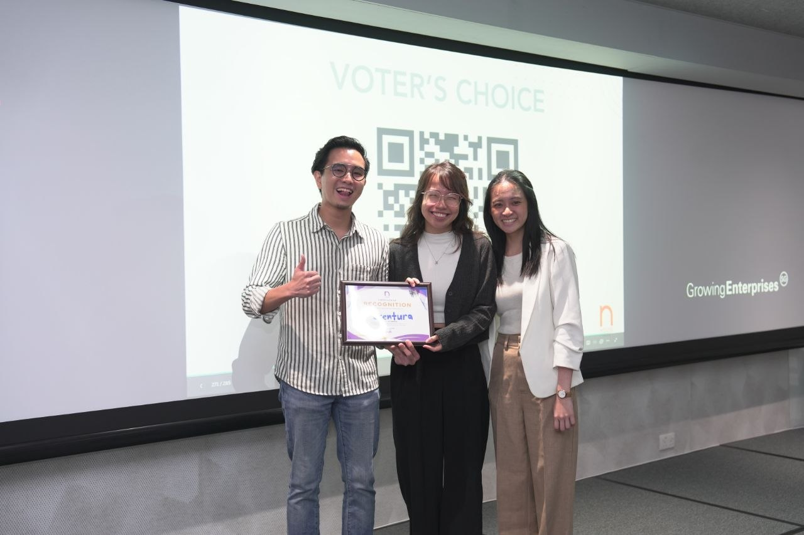

Helping cold-food brands — ice cream, bakeries, snacks — engineer authentic food aromas that trigger cravings. We turn passive foot traffic into hungry customers. Now piloting. Ask about a complimentary site assessment.
People are funny about food and scent. A smell can stop you in your tracks, pull up a memory, make you hungry before you've seen a single thing. Retail figured this out long ago — scent is how a space creates atmosphere. A warm bakery pulls you in from down the street. But so much of what we eat now arrives cold and sealed — ice cream, biscuits, sweets, frozen snacks, the rows of packaged food at NTUC — delicious, but silent. No smell, no pull, no moment. Scentura helps cold-food brands close that gap. We build atmosphere through scent — in their packaging or in their stores — so a product you meet through a freezer door or a wrapper can still make you feel something before the first bite.
What started as a question about human experience is becoming a reality. Scentura was 1st Runner-Up at NUS Enterprise House Pitch Night. We're running our first pilots now — partnering with 1 to 3 brands at a time. If that sounds like yours, reach out to our team.


Scentura is looking for a small number of early F&B pilot partners — brands curious about using scent to make cold-food experiences more craveable and memorable.
We're offering a limited number of complimentary scent audits, in exchange for honest feedback, pilot data, and permission to document the process. Low commitment, real insight — for both of us.
Apply as a pilot partner →